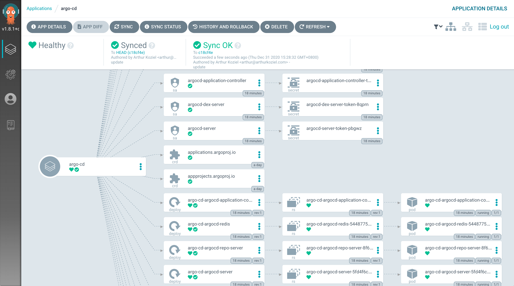
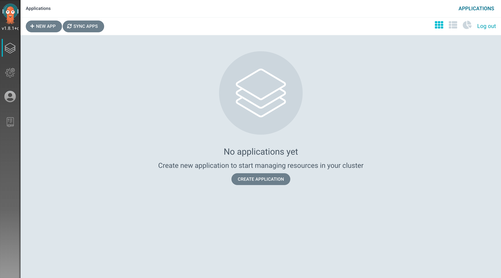
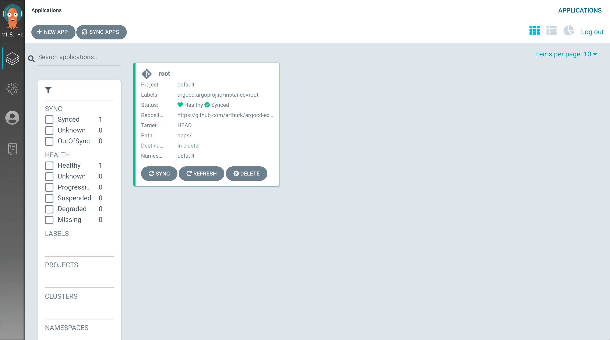
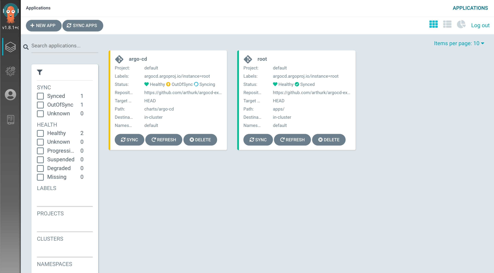
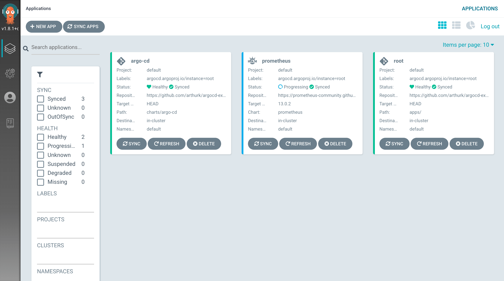

Setting up Argo CD with Helm
(Updated March 27, 2022 for Argo CD v2.3)
In this blog post we’re going to setup Argo CD on a Kubernetes cluster. We’ll install it with Helm, create an application to use the app-of-apps pattern, set Argo CD up so that it can update itself, and install Prometheus via Argo CD as an example.

All files mentioned in this blog post are available in a Git repository on GitHub.
What is Argo CD?
Argo CD is a GitOps tool to automatically synchronize the cluster to the desired state defined in a Git repository. Each workload is defined declarative through a resource manifest in a YAML file. Argo CD checks if the state defined in the Git repository matches what is running on the cluster and synchronizes it if changes were detected.
For example, instead of manually running CLI commands to update
Kubernetes resources with kubectl apply or
helm upgrade, we would update a YAML file in our Git
repository that contains an Application manifest. Argo CD
periodically checks this manifest for changes and will automatically
synchronize resources that are defined in it with the ones that are
running on our cluster.
A connection to the cluster, either from the developers laptop or from a CI/CD system, is no longer needed as changes are pulled from the Git repository by a Kubernetes Operator running inside the cluster.
Requirements
To follow this tutorial you’ll need the following. The version number shows what I’ve used for this tutorial:
- A Kubernetes cluster (1.23)
- kubectl (1.23.5)
- Helm (3.8.1)
- A public git repository
Create a Git repository
Our application manifests are stored in a Git repository. For this tutorial I’m using a public Github repo:
$ gh repo create argotest --public --clone
$ cd argotestCreating an umbrella Helm chart
We’ll use Helm to install Argo CD with the official chart from argoproj/argo-helm. We create a Helm umbrella chart that pulls in the original Argo CD chart as a dependency.
Using this approach we have the possibility to bundle extra resources
with the chart. For example, we can install credentials that are used to
authenticate with private Git or Helm repositories by placing them in
the chart template/ directory.
To create the umbrella chart we make a directory in our Git repository and place two files in it:
$ mkdir -p charts/argo-cdapiVersion: v2
name: argo-cd
version: 1.0.0
dependencies:
- name: argo-cd
version: 4.2.2
repository: https://argoproj.github.io/argo-helmargo-cd:
dex:
enabled: false
server:
extraArgs:
- --insecure
config:
repositories: |
- type: helm
name: argo-cd
url: https://argoproj.github.io/argo-helmAll available options can be found in the chart values.yaml
file. But keep in mind that for our subchart all values must be set
below the argo-cd: key.
For this tutorial we override the following values:
- We disable the
dexcomponent that is used for integration with external auth providers - We start the server with the
--insecureflag to serve the Web UI over http (This is assuming we’re using a local k8s server without TLS setup) - We add the Argo CD Helm repository to the repositories list to be used by applications
- The password for the admin user is set to
argocd
Before we install the chart we need to generate a
Chart.lock file:
$ helm repo add argo-cd https://argoproj.github.io/argo-helm
$ helm dep update charts/argo-cd/This will generate two files:
Chart.lockcharts/argo-cd-4.2.2.tgz
The tgz file is the downloaded dependency and not
required in our Git repository, we can therefore exclude it. Argo CD
will download the dependencies by itself based on the
Chart.lock file.
We exclude it by creating a .gitignore file in the chart
directory:
$ echo "charts/" > charts/argo-cd/.gitignoreThe chart is now ready to push to our Git repository:
$ git add charts/argo-cd
$ git commit -m 'add argo-cd chart'
$ git pushInstalling our Argo CD Helm chart
We install Argo CD manually via the Helm CLI:
$ helm install argo-cd charts/argo-cd/Accessing the Web UI
The Helm chart doesn’t install an Ingress by default, to access the
Web UI we have to port-forward to the argocd-server
service:
$ kubectl port-forward svc/argo-cd-argocd-server 8080:443We can then visit http://localhost:8080 to access it.
The default username is admin. The password is
auto-generated and we can get it with:
$ kubectl get secret argocd-initial-admin-secret -o jsonpath="{.data.password}" | base64 -dAfter logging in we’ll see the following screen:

In practice Argo CD applications could be added through the Web UI or
CLI, but since we want to manage everything declaratively we’ll write
Application manifests in YAML and put them into our Git
repo.
The root app
To add an application to Argo CD we need to add an
Application resource to Kubernetes. It specifies the Git
repository and the file path under which to find the manifests.
For example, if we wanted to deploy Prometheus we would write an
Application manifest for it. It would specify what Helm
chart to use and what values to set. We would then apply the
Application manifest with kubectl and wait for
the resource to be created in the cluster.
However, applying the manifests with kubectl is a manual
step that’s error prone and insecure. We would also need to repeat it
for every application, not just when adding applications but also when
updating them.
With Argo CD there is a way to automate adding Applications by creating an application that implements the app of apps pattern. We call this the “root” application.
The root application has one task: it generates
Application manifests for other applications. Argo CD will
watch the root application and synchronize any applications that it
generates.
With this setup we only have to add one application manually: the root application.
Creating the root app
For the root application we’ll use Helm and create a Helm chart that
has Application manifests as templates.
We create it in an apps/ directory and put a
Chart.yaml file and an empty values.yaml file
in it. In our git repo we run:
$ mkdir -p apps/templates
$ touch apps/values.yamlapiVersion: v2
name: root
version: 1.0.0We create the Application manifest for our root
application in apps/templates/root.yaml. This allows us to
do any updates to the root application itself through Argo CD:
apiVersion: argoproj.io/v1alpha1
kind: Application
metadata:
name: root
finalizers:
- resources-finalizer.argocd.argoproj.io
spec:
destination:
server: https://kubernetes.default.svc
namespace: default
project: default
source:
path: apps/
repoURL: https://github.com/arthurk/argocd-example-install.git
targetRevision: HEAD
syncPolicy:
automated:
prune: true
selfHeal: trueThe above Application watches the Helm chart under
apps/ (our root application) and synchronizes it if changes
were detected.
How does Argo CD know our application is a Helm chart? It looks for a
Chart.yaml file under path in the Git
repository.
Note: Argo CD will not use helm install
to install charts. It will render the chart with
helm template and then apply the output with
kubectl. This means we can’t run helm list on
a local machine to get all installed releases.
To deploy our root application we need to push the files to our Git repository and apply the manifest:
$ git add apps
$ git commit -m 'add root app'
$ git push
$ helm template apps/ | kubectl apply -f -In the Web UI we can now see that the root application was created successfully:

Letting Argo CD manage itself
We previously installed Argo CD with helm install which
means that updates to Argo CD itself would require us to run
helm upgrade manually. To avoid doing this we can create an
Application resource for Argo CD and let it manage itself.
With this approach any updates to our Argo CD deployment can be made by modifying files in our Git repository rather than running manual commands.
We put the application manifest in
apps/templates/argo-cd.yaml:
apiVersion: argoproj.io/v1alpha1
kind: Application
metadata:
name: argo-cd
namespace: default
finalizers:
- resources-finalizer.argocd.argoproj.io
spec:
destination:
server: https://kubernetes.default.svc
namespace: default
project: default
source:
path: charts/argo-cd
repoURL: https://github.com/arthurk/argocd-example-install.git
targetRevision: HEAD
syncPolicy:
automated:
prune: true
selfHeal: trueThen push the file to our Git repository:
$ git add apps/templates/argo-cd.yaml
$ git commit -m 'add argo-cd application'
$ git pushIn the Web UI we should now see the root application being
OutOfSync and Syncing.
If it doesn’t show the application immediately, click the “Refresh” button on the root application. By default it checks for changes in the Git repository every 3 minutes.

Once the Argo CD application is synced it can now manage itself and
we can delete the previously manually installed (via
helm install) installation. The following command will not
delete Argo CD from the cluster, only let Helm know that it is not
managing Argo CD anymore:
$ kubectl delete secret -l owner=helm,name=argo-cdWhen listing helm releases it should now show an empty list:
$ helm list
NAME NAMESPACE REVISION UPDATED STATUS CHART APP VERSIONCE REVISIONExample: Installing Prometheus
To demonstrate how to deploy a Helm chart with Argo CD, we’ll add Prometheus to our cluster.
First we create an Application manifest in
apps/templates/prometheus.yaml that uses the Prometheus
helm chart.
apps/templates/prometheus.yaml
apiVersion: argoproj.io/v1alpha1
kind: Application
metadata:
name: prometheus
namespace: default
finalizers:
- resources-finalizer.argocd.argoproj.io
spec:
destination:
server: https://kubernetes.default.svc
namespace: default
project: default
source:
chart: prometheus
helm:
values: |
pushgateway:
enabled: false
repoURL: https://prometheus-community.github.io/helm-charts
targetRevision: 15.6.0
syncPolicy:
automated:
prune: true
selfHeal: trueCompared to our previously created Argo CD umbrella chart, the differences are:
- We’re using
chartinstead ofpathto install a Helm chart from a different Helm repository - The
targetRevisionis the specific chart version that we want to install - The
repoURLis set to the prometheus-community Helm chart repository - We’re overriding the chart default values to disable the pushgateway
To deploy the application all we have to do is push the manifest to our Git repository:
$ git add apps/templates/prometheus.yaml
$ git commit -m 'add prometheus'
$ git pushPrometheus should show up in the Web UI after the next refresh.

Example: Uninstall Prometheus
To uninstall Prometheus we just have to delete the previously added
prometheus.yaml file from out Git repo:
$ git rm apps/templates/prometheus.yaml
$ git commit -m 'remove prometheus'
$ git pushThe application will be removed from the cluster after the next refresh.
Conclusion
In this tutorial we’ve installed Argo CD with Helm and set it up so that it can manage itself. Updates to Argo CD can be done by modifying the manifest inside the Git repository and don’t require any manual steps.
We’ve created a root application that uses the app-of-apps pattern to manage our applications in a declarative way.
Applications can be added, updated or removed with Git. As an example we’ve installed Prometheus in our cluster.
All files mentioned in this blog post are available in a Git repository on GitHub.
More details about Argo CD can be found on the project page and the GitHub repository.